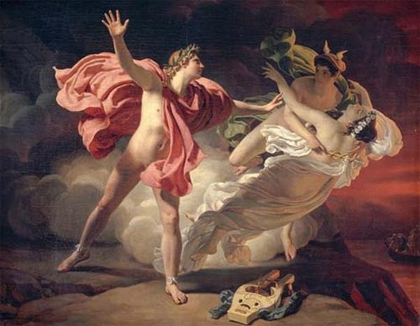

Vua xứ Thrace là thần Sông-Oeagre lấy tiên nữ Muses Calliope, vị nữ thần cai quản nghệ thuật sử thi, làm vợ. Hai vợ chồng sinh được một cậu con trai đặt tên là Orphée197. Nhờ sự dạy bảo của mẹ cho nên Orphée, từ nhỏ đã tỏ ra có năng khiếu nghệ thuật. Chú bé rất yêu thích và say mê luyện tập đàn ca. Thần Apollon thấy vậy đem lòng yêu mến và định bụng sẽ giúp đỡ chú bé Orphée trở thành một nghệ sĩ danh tiếng. Lớn lên, Orphée càng tỏ ra có tài năng đặc biệt. Giọng hát của chàng cao vút, trong trẻo và ấm áp lạ thường. Thần Apollon ban cho Orphée một cây đàn lia bảy dây và nhiều tài năng khác nữa, đặc biệt thần ban cho chàng nguồn cảm hứng nghệ thuật tưởng như không bao giờ vơi cạn và trái tim nhạy cảm, dễ xúc động hơn người. Thần lại còn ban cho chàng tài năng ứng tác, cứ cất tiếng là thành lời ca, cứ đưa tay vào đàn là thành những âm thanh hòa hợp du dương, êm ái. Nhưng Orphée không chỉ bằng lòng với cây đàn lia bảy dây. Chàng nghĩ bụng, ông của ta, thần Zeus vĩ đại, đã sinh ra chín nàng Muses và giao cho các nàng cai quản các nghệ thuật, vậy thì lẽ nào cây đàn này lại chỉ có bảy dây, và Orphée tìm cách lắp vào hai dây nữa cho thành chín như một kỷ niệm đối với dòng dõi của mình.
Thật khó mà nói được tiếng đàn và giọng hát của Orphée hay như thế nào, hay đến mức nào. Chỉ biết rằng mỗi khi Orphée vào rừng vừa đi vừa gảy đàn vừa hát thì cây cối trong rừng bảo nhau thôi đừng thì thào trò chuyện nữa. Tất cả đều im phăng phắc để lắng nghe tiếng đàn trong trẻo, thánh thót và tiếng hát sâu lắng, ấm áp tình người của Orphée. Không phải chỉ có cây cối mới say mê tiếng hát của Orphée. Núi đá khô khan và lạnh lùng đến thế mà khi nghe tiếng đàn, tiếng hát của Orphée cũng thấy bồi hồi, nôn nao trong lòng trong dạ. Những tảng đá ngơ ngẩn sững sờ khi tiếng đàn, tiếng hát của Orphée cứ nhỏ dần theo bước đi của chàng. Còn sông, suối khi nghe tiếng đàn, tiếng hát của Orphée thì bảo nhau tạm dừng bản hòa tấu của mình lại để lắng nghe tiếng đàn tuyệt diệu này mà học lấy cách chơi đàn. Có lần vì quá say mê tiếng đàn, tiếng hát của Orphée mà những tảng núi đá đã rủ nhau đi theo chàng. Orphée vào rừng không một vũ khí mang theo, ấy thế mà không một con thú nào xâm phạm đến tính mạng chàng. Từ xa nghe thấy tiếng đàn, tiếng ca của chàng vọng đến, thế là chúng gọi nhau đến quây quần bên chàng, ngồi im thin thít, ngoan ngoãn lắng nghe. Lúc ấy trông chúng chẳng có vẻ gì là hung dữ, là những ác thú chuyên bắt các súc vật, vồ người để ăn thịt. Còn những con vật hiền lành như thỏ, sóc, chim, gà, khỉ, vượn, hươu, nai... thì khi nghe tiếng đàn của Orphée là náo nức, sướng vui như mở cờ trong bụng. Chúng tíu tít gọi nhau, rủ nhau đi nghe Orphée đàn hát. Chúng nhảy múa tưng bừng theo lời ca, tiếng nhạc.

Orphê, thần Hermex và nàng Ơriđix
197 Có người cho rằng Orphée là người sáng lập tôn giáo Orphisme.